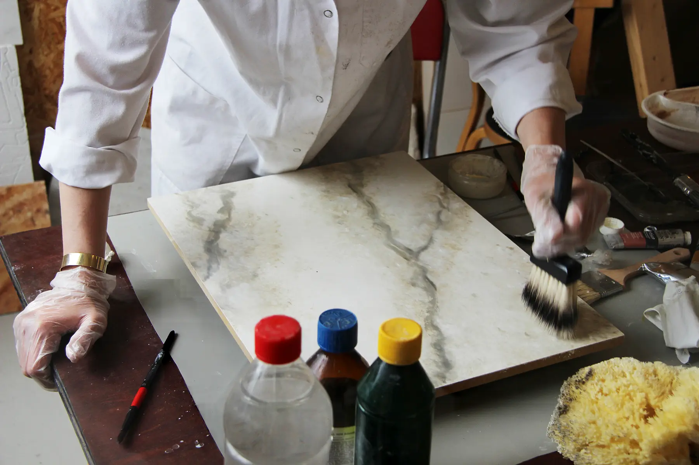
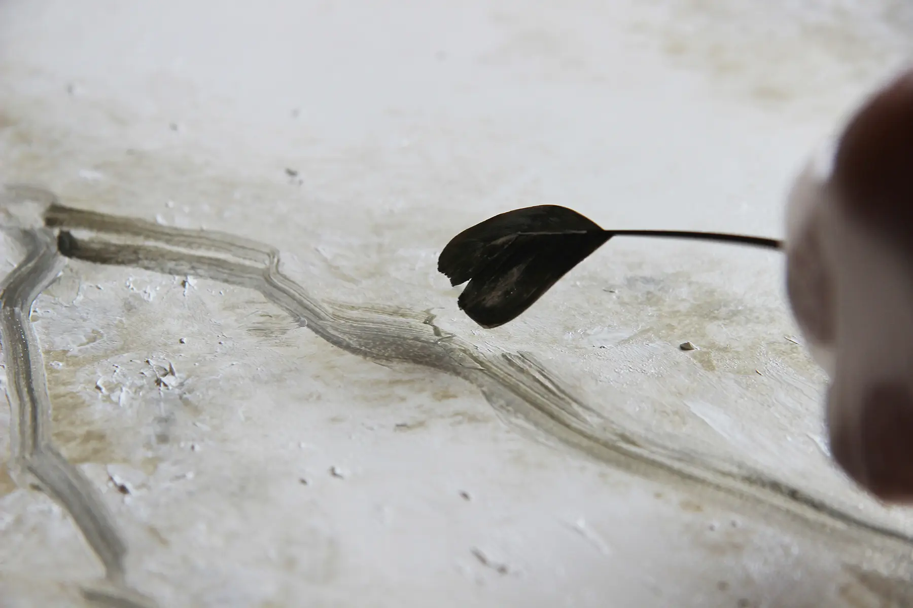
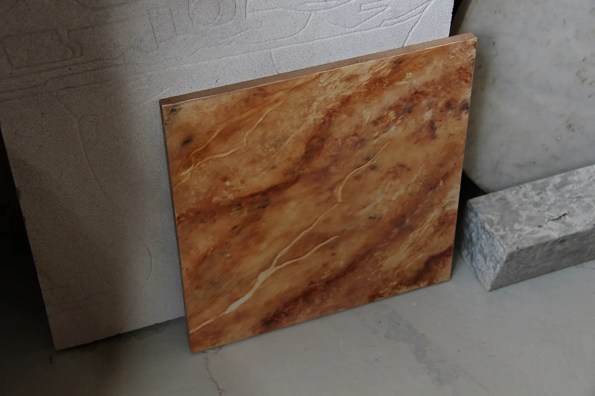
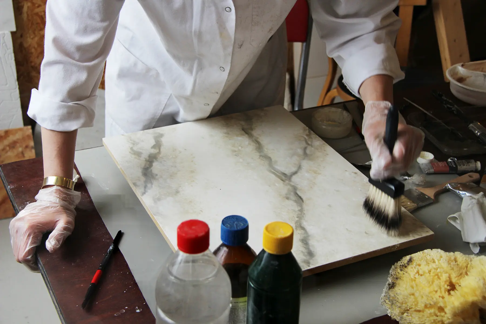
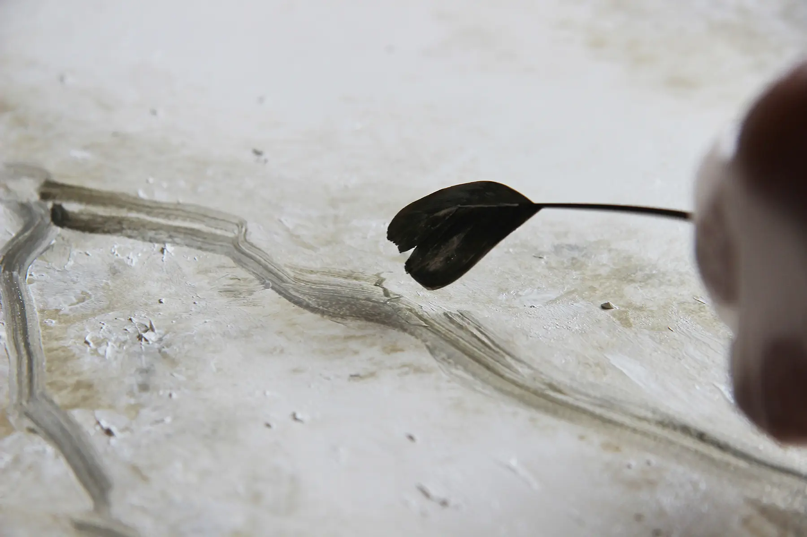
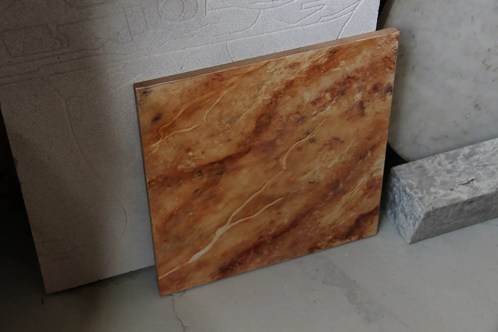

Marmorering med Ida Brockmann
En onsdag eftermiddag i maj, mødte vi Ida Brockmann i hendes atelier ved Prøvestensbroen. Vores besøg gav et indblik i marmorering, som Ida arbejdede med denne dag. Marmorering er en måde at efterligne marmor på og har i århundreder været anvendt på eksempelvis templer, palæer og paladser. Nederst på siden, finder du et uddrag fra et interview - alt imens der blandt andet arbejdes med særlige pensler, fjer og hjemmelavet pigment.
 




